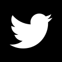

# Álgebra lineal para Deep Learning (Parte 1).
!!! Warn
Antes de nada, quiero aclarar que NO soy matemático y se de matemáticas lo justo para pasar el día.
Hay muchos conceptos que se me escapan y otros que trataré de manera muy superficial.
Matemáticos perdonadme, por favor. Y si detectais alguna metida de pata, avisarme.
> "I admire the elegance of your method of computation;"
> "it must be nice to ride through these fields upon the horse"
> "of true mathematics while the like of us have to make our way laboriously on foot."
>
> -- [Albert Einstein, "The Italian Mathematicians of Relativity"]("https://en.wikipedia.org/wiki/Tensor#cite_note-Goodstein-38" target="_blank") --
Bueno, siguiendo con el espíritu de estos posts, nos vamos a programar nuestra propia librería de álgebra lineal.
Sí, como suena.
Vamos a programar TODO, desde los tensores a las operaciones.
El álgebra lineal es una de las bases del Machine Learning y Deep Learning
ya que, al fin y al cabo, son aproximaciones numéricas de funciones y
el álgebra lineal es una excelente manera de calcular las soluciones de
las funciones y la vectorización de operaciones.
Sí, ya se que existen geniales librerías de álgebra como [Numpy]("https://numpy.org/" ) Python, o [Eigen3]("http://eigen.tuxfamily.org/") en C++. De hecho, vamos a usar Numpy como base para hacer las pruebas.
Pero creo que es bastante importante entender el funcionamiento
básico de las librerías de Álgebra lineal, tanto para entender el coste
de las operaciones, como la complejidad que representa.
Una vez tengamos nuestra implementación y sepamos como funciona
podremos, y deberemos, cambiar a una librería especializada y
optimizada.
Si ya sabes algo de álgebra lineal puedes saltarte la introducción y pasar directamente a la implementación.
Así que prepárate un buen café (o cerveza) y empecemos.
## Conceptos numéricos
Un concepto que debemos tener claro es que en Deep Learning se trabaja con el concepto de Tensor.
Pero no Tensor como se usa en física y matemáticas, si no que para
Deep Learning el concepto de Tensor se acerca más a lo que sería un
vector multidimensional, donde la dimensión se define por el rango.
Realmente trabajaremos casi siempre con Matrices, Vectores y
Escalares. Usaremos un tipo de producto tensorial a veces, y más para
vectorizar que otra cosa.
Y ahora vamos con el típico resumen de los conceptos numéricos que usaremos.
### Escalar
Un escalar es un número y, como número, describe una magnitud. Puede
ser una temperatura, una distancia o las cervezas que te vas a beber.
Tan sencillo como eso.
Otra manera de ver los escalares, son tensores de rango 0.
### Vector
Un vector es una lista ordenada de números y para nosotros será una
lista ordenada de características (aunque usaremos el termino features).
También podemos verlos como tensores de rango 1 y, normalmente, se representan como
$$
\vec{ \upsilon } = \begin{bmatrix}a_{0} & a_{1} & a_{2} & a_{3} \end{bmatrix}
$$
### Matriz
Una matriz es un conjunto bidimensional de elementos ordenados en filas y columnas.
También se suelen definir como un conjunto de vectores con el mismo número de elementos.
Así que, podemos ver las matrices como tensores de rango 2 y se suelen representar como una letra mayúscula
Por ejemplo una matrix de N filas por M columnas. con N=3 y M=4 se vería así:
$$ A^{3,4}= \begin{bmatrix} a_{0,0} & a_{0,1} & a_{0,2} & a_{0,3} \\ a_{1,0} & a_{1,1} & a_{1,2}& a_{1,3} \\ a_{2,0} & a_{2,1} & a_{2,2} & a_{2,3} \end{bmatrix} $$
Obviamente también podemos ver los vectores como matrices con una de sus dimensiones a igual a 1.
$$
\upsilon^{4,1} = \begin{bmatrix} a_{0} \\ a_{1} \\ a_{2} \\ a_{3} \end{bmatrix} \\ \upsilon^{1,4} = \begin{bmatrix} a_{0} & a_{1} & a_{2} & a_{3} \end{bmatrix}
$$
### Tensor
Un tensor, como ya hemos comentado, es una matriz multidimensional.
_in_dimension_4.png")]("images/tensor.png")
Para el Deep Learning realmente vamos a ver los tensores como agrupaciones de matrices, más que el concepto matemático de Tensor.
La forma más típica y sencilla de ver los tensores en Deep Learning es una imagen. Una imagen se compone de 3 dimensiones:
Altura, Anchura y Color(Red,Green,Blue).
Así que una imagen se puede representar como un tensor de rango 3:
$$
Imagen = A^{Alto,Ancho,3} = \\ \begin{bmatrix} \begin{bmatrix}R_{0,0} & … & R_{0,w-1} \\ . & … & . \\ . & … & . \\ . & … & . \\ R_{h-1,0} & … & R_{h-1,w-1} \end{bmatrix} ,\\ \begin{bmatrix}G_{0,0} & … & G_{0,w-1} \\ . & … & . \\ . & … & . \\ . & … & . \\ G_{h-1,0} & … & G_{h-1,w-1} \end{bmatrix} ,\\ \begin{bmatrix}B_{0,0} & … & B_{0,w-1} \\ . & … & . \\ . & … & . \\ . & … & . \\ B_{h-1,0} & … & B_{h-1,w-1} \end{bmatrix} \end{bmatrix}
$$
### Features
Tal vez os estéis preguntando para que queremos todos estos conceptos y matemáticas.
En este mundillo de análisis de datos, Machine Learning y Deep Learning, trabajamos con datos y estos son representados en forma de vectores o matrices (normalmente).
Por ejemplo, tenemos estos datos que hemos recopilado para nuestro modelo, donde cada columna $ F_{x} $ es una característica (Feature) que hemos medido y la columna $ Y $ es el resultado para esas medidas.
Unos datos recopilados de ejemplo.
F1 F2 F3 Y
0.7 0.1 -0.3 1
-0.1 0.5 0.2 2
-0.2 0.3 0.7 3
Estos datos definen un sistema de ecuaciones:
$$
0.7x + 0.1y – 0.3z = 1 \\ -0.1x + 0.5y – 0.2z = 2 \\ -0.2x + 0.3y – 0.7z = 3
$$
Que lo podemos representar como:
$$
X^{3,3}= \begin{bmatrix} 0.7 & 0.1 & -0.3 \\ -0.1 & 0.5 & 0.2 \\ -0.2 & 0.3 & 0.7 \end{bmatrix}
$$
$$
y^{3,1}=\begin{bmatrix} 1 \\ 2 \\ 3 \end{bmatrix}
$$
Teniendo nuestros datos en este formato, podemos trabajar con ellos.
Y ¿cómo trabajamos con estos datos?
Pues resulta que el álgebra lineal se centra bastante en sacar la solución a funciones de este tipo:
$$
X * \vec{w} = \vec{y}
$$
que en nuestro caso sería:
$$
X = \begin{bmatrix} 0.7 & 0.1 & -0.3 \\ -0.1 & 0.5 & 0.2 \\ -0.2 & 0.3 & 0.7 \end{bmatrix} * \begin{bmatrix} x \\ y \\ z \end{bmatrix} = \begin{bmatrix} 1 & 2 & 3 \end{bmatrix}
$$
#### Resolviendo la ecuación
Esta ecuación puede ser resuelta con:
$$ \vec{w} = X^{-1}*\vec{y} $$
*Tened en cuenta que $X^{-1}$ es la inversa de la matriz.
``` Python
X = np.array([0.7,0.1,-0.3,-0.1,0.5,0.2,-0.2,0.3,0.7])
X = X.reshape((3,3))
y = np.array([1,2,3])
y = y.reshape((3,1))
#calculamos la inversa de la matriz
X_inv = np.linalg.inv(X)
#resolvemos el sistema de ecuaciones.
w = X_inv.dot(y)
print(f"x={w[0]},y={w[1]},z={w[2]}")
#x=[2.59459459],y=[3.02702703],z=[3.72972973]
#comprobemos si el resultado es correcto
print(0.7 * w[0] + 0.1*w[1] -0.3*w[2], y[0]) # debe de dar 1
```
Parece sencillo, ¿no?. Pues no.
No todas las matrices se pueden “invertir”, así que hay que usar otros métodos.
#### Métodos directos (o matemáticos)
Existen una serie de algoritmos matemáticos para resolver estos sistemas de ecuaciones, algunos de ellos son:
- [Factorización LU]("https://es.wikipedia.org/wiki/Factorizaci%C3%B3n_LU")
- [Descomposición QR]("https://es.wikipedia.org/wiki/Factorizaci%C3%B3n_QR")
- [El método de Gauss]("https://es.wikipedia.org/wiki/Eliminaci%C3%B3n_de_Gauss-Jordan")
Pero estos métodos solo son efectivos si los datos nos caben en memoria, cosa que no suele suceder cuando trabajamos con datos masivos.
#### Métodos indirectos (o iterativos)
Otra manera de resolver estos sistemas de equaciones son los metodos iterativos que, como su nombre indica, resuelven el sistema mediante sucesivas aproximaciones a la solución.
En estos métodos podemos encontrar los algoritmos genéticos o el Gradient Descent. Nos centraremos en este último método en un par de posts ;).
!!! Info
Si estais interesados en un post sobre Algoritmos genéticos dejad un
comentario y lo pondré a la cola ;).
## Implementando
Bueno pues, como ya hemos comentado, vamos a empezar a implementar la clase Tensor.
Por simplicidad vamos a trabajar con una sola clase. No vamos a diferenciar entre tensor, matriz y vector.
Otra cosa a tener en cuenta es el orden de las dimensiones, puede ser linea-columna, que es la [normalmente usada en Numpy]("https://scipy-lectures.org/advanced/advanced_numpy/index.html#c-and-fortran-order"), o columna-linea que se usa normalmente en Fortran y Matlab.
Da igual cual se quiera usar, pero hay que tener muy en cuenta que una vez se elija una, no se puede ir cambiando.
Nosotros usaremos Linea-Columna por similitud con [Numpy]("https://docs.scipy.org/doc/numpy-1.13.0/reference/internals.code-explanations.html#memory-model")
]("images/rowcolumn.png")
### Representación en memoria
Los tensores son vectores multidimensionales, o ndarrays, y eso debemos representarlo de alguna manera que nuestros ordenadores lo entiendan.
Hay varias maneras de representar esto, pero nosotros vamos a usar el formato típico en Numpy.
Vamos a almacenar todos los elementos en un array contiguo en memoria, y los accesos los haremos mediante lo que se llama “stride”.
Cada “stride” es un numero entero que nos indica el “salto” en la memoria que debe hacerse por cada incremento en esa dimensión.
Por ejemplo, si tenemos una matriz de 3×4, definida en row-column order:
$$
A^{3,4}= \begin{bmatrix}a_{0,0} & a_{0,1} & a_{0,2}& a_{0,3} \\ a_{1,0} & a_{1,1} & a_{1,2}& a_{1,3} \\ a_{2,0} & a_{2,1} & a_{2,2}& a_{2,3} \end{bmatrix}
$$
Esto tendrá una representación en memoria como una lista de 12 elementos, $3 * 4 = 12$ ;)
$$
RAM = \begin{bmatrix}a_{0,0} & a_{0,1} & a_{0,2} & a_{0,3} & a_{1,0} & a_{1,1}&a_{1,2} & a_{1,3} &a_{2,0}&a_{2,1}&a_{2,2}& a_{2,3} \end{bmatrix}
$$
En Numpy ( y C & C++) el stride es el salto en memoria que debes dar, así que si trabajamos con floats de 32 bits, cada elemento tiene un salto de 4 bytes (1 byte son 8 bits por lo que 4 bytes por 8 bits son los 32 bits del float de 32 bits con el que trabajamos).
Nosotros no vamos a trabajar con tamaño de memoria, si no con elementos, así que en la primera dimensión (rows) tendremos un stride de 4 ya que tendremos que saltar 4 elementos para llegar al primer elemento de la segunda linea, y en la segunda dimensión (cols) tendremos una dimensión de 1 ya que es la dimensión final.
Entonces. si queremos acceder al elemento en la posición $A_{1,3}$, tendremos que calcular el offset como:
``` Python
#pseudo código
axis_row_stride = 4
axis_col_stride = 1
dim_row = 1
dim_col = 3
offset = dim_row * axis_row_stride + dim_col * axis_col_stride;
offset // 7
```
$$
RAM = \begin{bmatrix}a_{0,0} & a_{0,1} & a_{0,2} & a_{0,3} & a_{1,0} & a_{1,1}&a_{1,2} & \color{red}{ a_{1,3}} &a_{2,0}&a_{2,1}&a_{2,2}& a_{2,3} \end{bmatrix}
$$
Bueno y ahora que ya sabemos como localizar los elementos de nuestro tensor, vamos a implementarlo :).
## Clase Tensor
``` Python
// pseudo-código para nuestros tensores.
class Tensor{
int rank; //rango de nuestro tensor
lista data // vector de elementos
tupla strides// tupla con los strides de cada dimensión
tupla shape // tupla con las dimensiones de nuestro tensor
//recordad que tenemos que ser coherentes si usamos row-column o column-row
Tensor( shape:tupla,initial_data=None,initial_value=0);//creación
get_elem_in_pos (key:tupla)// get elemento
reshape( newshape:tupla) //cambia las dimensiones de nuestro tensor
}
```
*Constructor*: Vamos a tener un constructor que inicialice nuestro tensor de varias maneras.
- Será obligatorio darle un “shape” (dimensiones), de las cuales sacaremos el tamaño del vector de datos.
- Podremos pasarle un vector de datos externo. Hay que tener en cuenta que ese vector y el tamaño definido en el shape debe de ser igual.
- O, también. podremos darle un valor inicial fijo, p. ej. iniciarlo a 1.
*reshape(tupla)*: Función para cambiar las dimensiones del tensor. Hay que tener muy en cuenta que el tamaño del vector de datos no puede cambiar, así que el tamaño definido en el nuevo shape, debe ser igual que el antiguo.
p.ej:
```
shape inicial : (2,3) -> tamaño 2*3 = 6 nuevo shape: (1,6) -> tamaño 1*6=6 -> es compatible
nuevo shape: (2,4) -> tamaño 2*4=8 -> NO es compatible.
nuevo shape: (1,2,3)-> tamaño, 1*2*3=6 -> es compatible.
```
Al cambiar el shape, hay que cambiar también los strides de la misma manera que hemos comentado antes.
*get_element(key)*: La key puede tener distintas formas, aunque podemos simplificarlo y, para nosotros, esa tupla debe tener la misma cantidad de elementos que de dimensiones y cada elemento debe ser menor estricto que el valor de la dimensión.
¿Y qué devuelve esta función? Pues simplificando, hay dos resultados
Usando para los ejempos el tensor de rango 2:
$$
A^{3,4}= \begin{bmatrix}a_{0,0} & a_{0,1} & a_{0,2}& a_{0,3} \\ a_{1,0} & a_{1,1} & a_{1,2}& a_{1,3} \\ a_{2,0} & a_{2,1} & a_{2,2}& a_{2,3} \end{bmatrix}
$$
Si el key tiene todos los elementos definidos, se devuelve el elemento que hay en esa posición.
Ejemplo:
get_element((2,1)) -> devolverá el elemento $a_{2,1}$
Si uno de las keys es el valor especial “:”, se devolverá todos los elementos de esa dimensión, o lo que es lo mismo un slice.
Ejemplo:
A.get_element((2,:)) -> Devolverá el segundo row entero:
$$
R^{1,4}=\begin{bmatrix} a_{1,0} & a_{1,1} & a_{1,2}& a_{1,3} \end{bmatrix}
$$
A.get_element((:,3)) -> Devolverá la tercera columna entera:
$$
R^{3,1}=\begin{bmatrix} a_{0,2} \\ a_{1,2} \\ a_{2,2} \end{bmatrix}
$$
Tened en cuenta que hemos definido esta función así para emular el comportamiento de Numpy. Podéis modificar el comportamiento como querais.
``` Python
import numpy as np
a = np.arange(12)
a = a.reshape((3,4))
print(a)
[[ 0 1 2 3]
[ 4 5 6 7]
[ 8 9 10 11]]
print(a[2,1])
9
print(a[:,3])
[ 3 7 11]
```
### Tests Unitarios
Bueno, pues como ya hemos acabado de definir nuestros tensores, ya los podemos probar:
``` Python
// Test de tensores en pseudo-código
Tensor t((2,3),initial_data=[0,1,2,3,4,5])
assert(t.get_element(1,1)==4)
t.reshape(3,2)
assert(t.get_element(1,1)==3)
t.get_element((1,:)==[2,3])
t.get_element((:,0)==[0, 2, 4])
Tensor t2((2,3),initial_value=42)
assert(t(0,0)==42)
assert(t(1,1)==42)
assert(t(3,2)==42)
assert_error(t2.reshape((4,2)))
```
## Operaciones
Una vez que tenemos nuestros tensores, vamos a tener que realizar operaciones con ellos.
Vamos a tratar las operaciones como un ente independiente, no como un miembro de los tensores.
Así podremos separar la implementación del cálculo del resto del sistema, podremos cambiar el backend de cálculo cuando queramos.
Por ejemplo, podríamos tener una implementación de las operaciones con nuestro propia librería de tensores e implementando cada operación y además podríamos tener otra implementación usando numpy y otra usando GPU con cublas o clblas.
### Clase base
Por razones que veremos en el próximo post, todas las operaciones deben tener una funcionalidad mínima definida.
O, si queremos hablar de forma OOP _(OOP de Object Oriented Programming o programación orientada a objetos)_, deben heredar de una clase base.
En concreto la clase base debe de tener estos métodos:
``` Python
//pseudo-code para la clase base de operación.
class operation
{
forward()
{
throw NotImplemented;
}
backward()
{
throw NotImplemented;
}
}
```
Donde la operación **forward** ejecutará la operación.
Y la operación backward… bueno ya vereis para qué es ;).
### Operaciones básicas
#### Operación Escalar-tensor
La primeras operaciones que debemos implementar son las operaciones de escalar con tensor.
Estas operaciones aplican la operación a cada uno de los elementos del tensor.
Por ejemplo si tenemos un tensor y le aplicamos la operación $ \circ $ con el escalar $ x $ :
$$
\begin{bmatrix}a_{0,0} & a_{0,1} & a_{0,2}& a_{0,3} \\ a_{1,0} & a_{1,1} & a_{1,2}& a_{1,3} \\ a_{2,0} & a_{2,1} & a_{2,2}& a_{2,3} \end{bmatrix} \circ x = \begin{bmatrix}a_{0,0} \circ x & a_{0,1} \circ x & a_{0,2}\circ x & a_{0,3}\circ x \\ a_{1,0} \circ x & a_{1,1} \circ x & a_{1,2} \circ x & a_{1,3}\circ x \\ a_{2,0} \circ x & a_{2,1} \circ x & a_{2,2}\circ x & a_{2,3} \circ x \end{bmatrix}
$$
Así que ya podéis implementar las primeras operaciones:
``` Python
//pseudo-code para la operacion suma
class Add(Operation):
Add(Tensor t, escalar a );
forward(){
Tensor resultado;
resultado= ...
return resultado
}
class Substract(Operation):
Substract(Tensor t, escalar a );
forward(){
Tensor resultado;
resultado= ...
return resultado
}
class Multiply(Operation):
Multiply(Tensor t, escalar a );
forward(){
Tensor resultado;
resultado= ...
return resultado
}
class Divide(Operation):
Divide(Tensor t, escalar a );
forward(){
Tensor resultado;
resultado= ...
return resultado
}
```
¿Cómo implementar esto? Pues simplemente aplicar la operación para cada elemento de la lista de elementos de nuestro vector.
#### Test unitarios
``` Python
Tensor t=Tensor((2,2),initial_value=1)
operacion op=Add(t,41)
Tensor res = op.forward()
for(x=0;x<2;x++)
for(y=0;y<2;y++)
assert(res(x,y)==42)
Tensor t2=Tensor((2,2),initial_value=1)
operacion op2=Add(t,-43)
Tensor res2 = op2.forward()
for(x=0;x<2;x++)
for(y=0;y<2;y++)
assert(t2(x,y)==-42)
Tensor t3=Tensor((2,2),initial_value=2)
operacion op3=Multiply(t,21)
Tensor res3 = op3.forward()
for(x=0;x<2;x++)
for(y=0;y<2;y++)
assert(res3(x,y)==42)
//También podemos dividir ;)
Tensor t4=Tensor((2,2),initial_value=2)
operacion op4=Multiply(t,0.5)
Tensor res4 = op4.forward()
for(x=0;x<2;x++)
for(y=0;y<2;y++)
assert(res4(x,y)==1)
```
### Operaciones Unarias.
Habrá muchas veces que deberemos aplicar una operación a todos los elementos de un tensor, así que debemos tener ese tipo de operaciones preparadas, como por ejemplo el logaritmo o el $e^x$.
``` Python
class Log(Operation):
Log(Tensor t );
forward(){
Tensor resultado;
resultado= for each element in tensor -> element = log(element)
return resultado
}
```
#### Test unitarios
Para hacer los test unitarios podremos echar mano de Numpy
``` Python
Tensor t([1,2,3,4,5,6])
t.reshape((3,2))
result = Log(t).forward()
import numpy as np
np.log(np.arange(1,7).reshape(3,2) )
[[0. 0.69314718]
[1.09861229 1.38629436]
[1.60943791 1.79175947]]
```
### Broadcasting
El broadcasting es una “operación” que realizamos a un tensor para extenderlo a otras dimensiones. Es una operación bastante útil para realizar otras operaciones que de otra manera no podríamos realizar.
Esta operación viene de numpy, pero se ha extendido a todos los frameworks de deep learning.
Pero, [¿qué es realmente?]("https://docs.scipy.org/doc/numpy/user/basics.broadcasting.html")
Los tensores de distinto tamaño no se pueden sumar, restar o hacer casi nada con ellos. Una manera de conseguirlo es clonar el tensor de menor dimensión hasta que sea compatible con el otro tensor.
Resumiendo el “broadcasting” nos dice como se comportan los tensores de distintos shapes cuando operamos con ellos.
El broadcasting tiene 2 pasos.
**Paso 1**: Comprobar que los tensores son compatibles
Para que sean compatibles cada dimensión de los tensores deben de tener una de estas características:
Las dimensiones deber de ser iguales.
Una de las dos debe ser 1.
Si no tiene esa dimensión ( es de rango inferior) se toma como 1.
**Paso 2**: Determinar el tamaño del tensor resultante.
Con las dimensiones que hemos extendido en el Paso 1, el valor más alto que tenga cada dimensión será la dimensión de salida del broadcasting.
Vamos a ver unos ejemplos.
Ejemplos:
$$
A^{2,1} = \begin{bmatrix}a_{0,0} \\a_{1,0} \end{bmatrix} , B^{2,3}= \begin{bmatrix}b_{0,0} & b_{0,1} & b_{0,2} \\ b_{1,0} & b_{1,1} & b_{1,2} \end{bmatrix}
$$
Paso 1:
- Probamos el último par de dimensiones, valores 1 y 3 , no son iguales, pero uno de ellos es 1, así que es compatible.
- Segundo par de dimensiones, 2 y 2 como son iguales, es compatible.
Como todas las dimensiones son compatibles, el broadcasting se puede hacer.
Paso 2:
A pasará de 2,1 a 2,3
B se quedará con 2,3
$$
A_B^{2,3} = \begin{bmatrix}a_{0,0} & a_{0,0} & a_{0,0} \\a_{1,0} &a_{1,0} &a_{1,0} \end{bmatrix} , B^{2,3}= \begin{bmatrix}b_{0,0} & b_{0,1} & b_{0,2} \\ b_{1,0} & b_{1,1} & b_{1,2} \end{bmatrix}
$$
Otro ejemplo con un escalar
$$
A^{3,2} = \begin{bmatrix}a_{0,0} & a_{0,1} \\a_{1,0} & a_{1,1} \\a_{2,0} & a_{2,1} \end{bmatrix} , B = b
$$
Paso 1:
Probamos el último par de dimensiones 2 y nada. Como la segunda es nada, se extiende a 1. No son iguales, pero uno de ellos es 1, así que es compatible.
Segundo par de dimensiones 3 y nada. Como la segunda es nada, se extiende a 1. No son iguales, pero uno de ellos es 1, así que es compatible.
Paso 2:
A se quedará con 3,2
B pasará a 3,2
$$
B_B^{3,2} = \begin{bmatrix}b & b \\ b & b \\ b & b \end{bmatrix}
$$
Otro ejemplo:
$$
A^{1,2} = \begin{bmatrix}a_{0,0} & a_{0,1} \end{bmatrix} , B^{3,1}= \begin{bmatrix}b_{0,0} \\ b_{1,0} \\ b_{2,0}\end{bmatrix}
$$
Paso 1:
- Probamos el último par de dimensiones 2 y 1 , no son iguales, pero uno de ellos es 1, así que es compatible.
- Segundo par de dimensiones, 1 y 3 no son iguales, pero uno de ellos es 1, así que es compatible.
Como todas las dimensiones son compatibles, el broadcasting se puede hacer.
Paso 2:
A pasará de 1,2 a 3,2
B pasará de 3,1 a 3,2
$$
A_B^{3,2} = \begin{bmatrix}a_{0,0} & a_{0,1} \\ a_{0,0} & a_{0,1} \\ a_{0,0} & a_{0,1} \end{bmatrix} ,B_B^{3,2}= \begin{bmatrix}b_{0,0} & b_{0,0} \\ b_{1,0} & b_{1,0} \\ b_{2,0} & b_{2,0} \end{bmatrix}
$$
Y otro ejemplo más.
$$
A^{2,2} = \begin{bmatrix}a_{0,0} & a_{0,1} \\ a_{1,0} & a_{1,1} \end{bmatrix} , B^{3,1}= \begin{bmatrix}b_{0,0} \\ b_{1,0} \\ b_{2,0}\end{bmatrix}
$$
Paso 1:
- Probamos el último par de dimensiones 2 y 1 , no son iguales, pero uno de ellos es 1, así que es compatible.
- Segundo par de dimensiones, 2 y 3 no son iguales, y ninguno es 1, así que es **NO** es compatible.
Como no todas las dimensiones son compatibles, el broadcasting NO se puede hacer.
De todas maneras, para una definición más formal podéis echar un ojo a la documentación oficial de [Numpy]("https://docs.scipy.org/doc/numpy/user/basics.broadcasting.html") y de [Tensorflow]("https://www.tensorflow.org/xla/broadcasting")
### Sumatorio
Otra operación que usaremos mucho será el sumatorio, ya sea por lineas, por columnas o de todos los elementos.
Para:
$$
A^{3,3}= \begin{bmatrix}a_{0,0} & a_{0,1} & a_{0,2} \\ a_{1,0} & a_{1,1} & a_{1,2} \\ a_{2,0} & a_{2,1} & a_{2,2}\end{bmatrix}
$$
$$
\sum_{i=0}^{i=n-1} A
$$
Se suman todos los elmentos de cada column y devuelve un nuevo tensor
$$
A_S^{1,3}=\begin{bmatrix}a_{0,0} + a_{1,0} + a_{2,0} & a_{0,1} + a_{1,1} + a_{2,1} & a_{0,2} + a_{1,2} + a_{2,2} \end{bmatrix}
$$
Y si lo hacemos por columnas:
$$
\sum_{j=0}^{j=m-1} A
$$
Se suman todos los elmentos de cada row y devuelve un nuevo tensor.
$$
A_S^{3,1}=\begin{bmatrix}a_{0,0} + a_{0,1} + a_{0,2} \\ a_{1,0} + a_{1,1} + a_{1,2} \\ a_{2,0} + a_{2,1} + a_{2,2} \end{bmatrix}
$$
#### Test unitarios
Podemos testear nuestra función de sumatorio con Numpy:
``` Python
import numpy as np
a = np.arange(9).reshape((3,3))
//sumatorio por rows
np.sum(a,axis=0)
[ 9, 12, 15]
//sumatorio por columns
np.sum(a,axis=1)
[ 3, 12, 21]
//sumatorio todo
np.sum(a)
36
```
## Operaciones tensor-tensor
Y llegamos a la aritmética básica de los tensores. Es bastante sencilla ya que es toda por elementos, exactamente igual que la Multiplicación de Hadamard, pero con división, suma y resta.
### Multiplicación de Hadamard
Para dos tensores del mismo tamaño, la multiplicación de Hadamard es la multiplicación de cada uno de los elementos por el elemento en la misma posición del otro tensor.
$$
\begin{bmatrix}a_{0,0} & a_{0,1} & a_{0,2}& a_{0,3} \\ a_{1,0} & a_{1,1} & a_{1,2}& a_{1,3} \\ a_{2,0} & a_{2,1} & a_{2,2}& a_{2,3} \end{bmatrix} \odot \begin{bmatrix}b_{0,0} & b_{0,1} & b_{0,2}& b_{0,3} \\ b_{1,0} & b_{1,1} & b_{1,2}& b_{1,3} \\ b_{2,0} & b_{2,1} & b_{2,2}& b_{2,3} \end{bmatrix} = \begin{bmatrix}a_{0,0} \odot b_{0,0} & a_{0,1} \odot b_{0,1} & a_{0,2}\odot b_{0,2} & a_{0,3}\odot b_{0,3} \\ a_{1,0} \odot b_{1,0} & a_{1,1} \odot b_{1,1} & a_{1,2} \odot b_{1,2} & a_{1,3}\odot b_{1,3} \\ a_{2,0} \odot b_{2,0} & a_{2,1} \odot b_{2,1} & a_{2,2}\odot b_{2,2} & a_{2,3} \odot b_{2,3} \end{bmatrix}
$$
#### ¿Y si los tensores no tienen el mismo tamaño?
Aquí es donde entra el broadcasting.
Si los tensores no tienen el mismo tamaño, se debe intentar aplicar el broadcasting para hacer que los tensores sean compatibles.
Obviamente, si no se puede aplicar el broadcasting la operación no se puede hacer.
#### Test unitarios.
La verdad es que podemos probarlo facilmente con Numpy
``` Python
import numpy as np
a = np.arange(6).reshape(3,2)
b = np.arange(1,4).reshape(3,1)
a+b
[[1, 2],
[4, 5],
[7, 8]]
a-b
[[-1, 0],
[ 0, 1],
[ 1, 2]]
# es la multiplicación de Hadamard
a*b
[[ 0, 1],
[ 4, 6],
[12, 15]]
a/b
[[0. , 1. ],
[1. , 1.5 ],
[1.33333333, 1.66666667]]
c=np.arange(4).reshape(2,2)
a*c
ValueError: operands could not be broadcast together with shapes (3,2) (2,2)
```
## Unas palabras finales.
Vamos a dejar este post aquí, porque creo que me he extendido demasiado.
Para el siguiente post veremos una sola operación.
Pero es **LA OPERACIÓN**
## Dudas y preguntas.
Si tienes cualquier duda, pregunta o he metido la pata en algún sitio, puedes contactar conmigo en twitter.

-------------------------